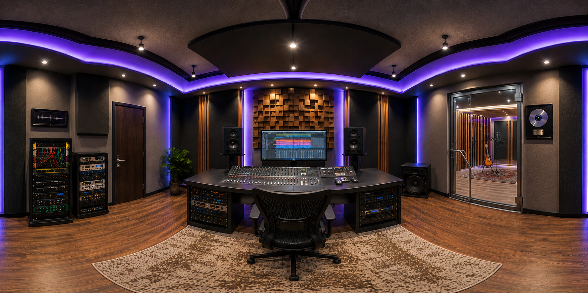

Explore a fully modeled control room in 360°. Click any piece of gear — the console, monitors, patch bay — and get a short lesson exactly where it lives in the room.

Every hotspot below is a short lesson tied to real gear — walk up to it in the 360° tour and it opens automatically.
Nearfield vs midfield, ported vs sealed design, crossovers.
Channel strips, analog summing, bus routing, talkback.
Recall, non-destructive editing, plugins vs outboard gear.
Normalled routing, balanced cabling, recall speed.
Gain staging, transformer vs solid-state coloration.
Absorption vs diffusion, the reflection-free zone.
Room modes, subwoofer placement, bass management.
A/D conversion, sample rate & bit depth, clocking.
Watch the intro video and browse the curriculum before signing up.
Sign up and check out to unlock every lesson and the full VR tour.
Work through chapters at your pace, then step into the studio in 360°.
Full curriculum, narrated lessons, and the 360° tour — all in one sign up.
This is the existing 360° panorama tour experience — no design changes requested here. Sign-in and "Launch VR studio" both land here.
90-second preview of the studio tour and a sample lesson would play here.